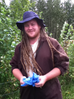

Who is Greenhall?
My name is Russell Green Osborne
First and foremost, guiding my professional and personal life is the desire to see my community build self-sufficiency and resilience. I think that these qualities are the foundation for making the Kootenay's the best place in the world to live
I spent most of a decade pursuing an academic and real world understanding of sustainability and how those concepts apply in modern agriculture. I don't subscribe to any one school of agricultral production, instead I try to use the best tools to synthesize individual holistic solutions.
As a father I want to provide a world worth living in for future generations while still committing to stable and managed growth as a region, a province, a country and a global community.

